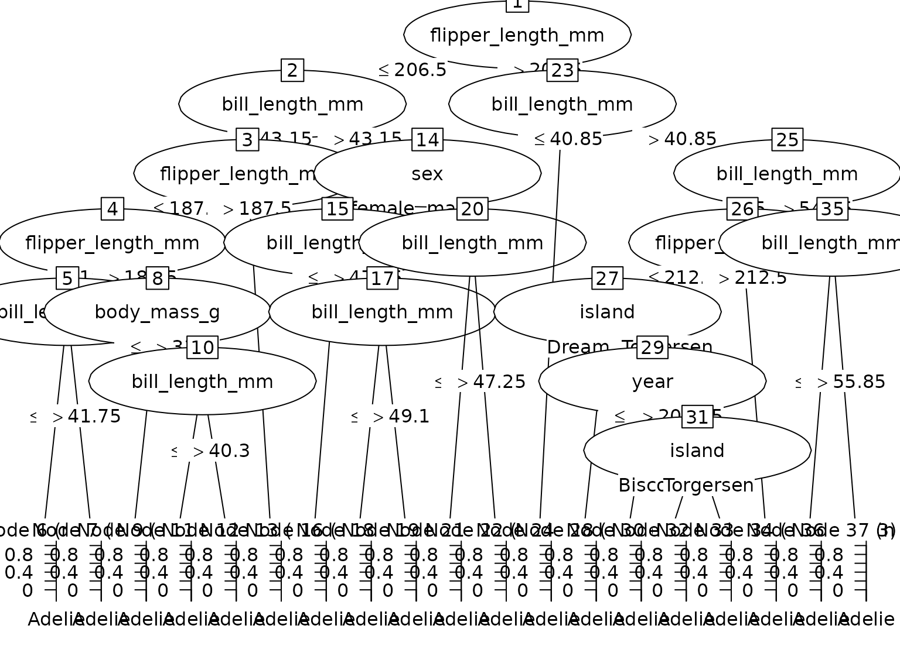

Convert a single tree from a ranger random forest model to a party object for use with partykit visualization and analysis tools.
Usage
# S3 method for class 'ranger'
as.party(obj, tree = 1L, data = NULL, ...)Arguments
- obj
A
rangerobject from the ranger package.- tree
Integer specifying which tree to convert (1-based indexing, default is 1). Must be between 1 and the number of trees in the forest.
- data
Data.frame containing the training data, including both predictors and response variable. Required for proper party object creation with fitted values and node summaries.
- ...
Not currently used.
Details
Ranger tree storage format
The ranger package stores trees in obj$forest with parallel vectors:
split.varIDs[[tree]]: 0-based variable indices for splitssplit.values[[tree]]: threshold values for splitschild.nodeIDs[[tree]]: matrix with 2 columns (left, right child IDs)is.ordered[[tree]]: whether split variable is ordered (for categoricals)All node IDs are 0-based (root = 0)
Node indexing
Internally, ranger uses 0-based node indices (root is node 0)
User-facing
treeparameter uses 1-based indexing (R convention)Leaf nodes have
split.varIDsentry ofNAor large sentinel value
Examples
if (rlang::is_installed(c("ranger", "palmerpenguins"))) {
# Classification example
data(penguins, package = "palmerpenguins")
penguins <- na.omit(penguins)
set.seed(2847)
rf <- ranger::ranger(
species ~ ., data = penguins, num.trees = 3, num.threads = 1
)
# Convert first tree
party_tree <- as.party(rf, tree = 1L, data = penguins)
print(party_tree)
plot(party_tree)
# Predictions from party object
predict(party_tree, newdata = penguins[1:5, ])
# Regression example
data(mtcars)
set.seed(5193)
rf_reg <- ranger::ranger(
mpg ~ ., data = mtcars, num.trees = 3, num.threads = 1
)
party_tree_reg <- as.party(rf_reg, tree = 1L, data = mtcars)
print(party_tree_reg)
}
#>
#> Model formula:
#> ~island + bill_length_mm + bill_depth_mm + flipper_length_mm +
#> body_mass_g + sex + year
#>
#> Fitted party:
#> [1] root
#> | [2] flipper_length_mm <= 206.5
#> | | [3] bill_length_mm <= 43.15
#> | | | [4] flipper_length_mm <= 187.5
#> | | | | [5] flipper_length_mm <= 186.5
#> | | | | | [6] bill_length_mm <= 41.75: Adelie (n = 40, err = 0.0%)
#> | | | | | [7] bill_length_mm > 41.75: Adelie (n = 2, err = 50.0%)
#> | | | | [8] flipper_length_mm > 186.5
#> | | | | | [9] body_mass_g <= 3325: Adelie (n = 5, err = 20.0%)
#> | | | | | [10] body_mass_g > 3325
#> | | | | | | [11] bill_length_mm <= 40.3: Adelie (n = 5, err = 0.0%)
#> | | | | | | [12] bill_length_mm > 40.3: Chinstrap (n = 3, err = 33.3%)
#> | | | [13] flipper_length_mm > 187.5: Adelie (n = 87, err = 0.0%)
#> | | [14] bill_length_mm > 43.15
#> | | | [15] sex in female
#> | | | | [16] bill_length_mm <= 47.65: Chinstrap (n = 23, err = 0.0%)
#> | | | | [17] bill_length_mm > 47.65
#> | | | | | [18] bill_length_mm <= 49.1: Chinstrap (n = 2, err = 50.0%)
#> | | | | | [19] bill_length_mm > 49.1: Chinstrap (n = 6, err = 0.0%)
#> | | | [20] sex in male
#> | | | | [21] bill_length_mm <= 47.25: Adelie (n = 6, err = 0.0%)
#> | | | | [22] bill_length_mm > 47.25: Chinstrap (n = 29, err = 0.0%)
#> | [23] flipper_length_mm > 206.5
#> | | [24] bill_length_mm <= 40.85: Adelie (n = 1, err = 0.0%)
#> | | [25] bill_length_mm > 40.85
#> | | | [26] bill_length_mm <= 54.15
#> | | | | [27] flipper_length_mm <= 212.5
#> | | | | | [28] island in Biscoe: Gentoo (n = 31, err = 0.0%)
#> | | | | | [29] island in Dream, Torgersen
#> | | | | | | [30] year <= 2008.5: Chinstrap (n = 2, err = 0.0%)
#> | | | | | | [31] year > 2008.5
#> | | | | | | | [32] island in Biscoe, Dream: Chinstrap (n = 2, err = 0.0%)
#> | | | | | | | [33] island in Torgersen: Adelie (n = 1, err = 0.0%)
#> | | | | [34] flipper_length_mm > 212.5: Gentoo (n = 83, err = 0.0%)
#> | | | [35] bill_length_mm > 54.15
#> | | | | [36] bill_length_mm <= 55.85: Gentoo (n = 3, err = 33.3%)
#> | | | | [37] bill_length_mm > 55.85: Gentoo (n = 2, err = 0.0%)
#>
#> Number of inner nodes: 18
#> Number of terminal nodes: 19

#>
#> Model formula:
#> ~cyl + disp + hp + drat + wt + qsec + vs + am + gear + carb
#>
#> Fitted party:
#> [1] root
#> | [2] wt <= 2.38
#> | | [3] hp <= 65.5: 32.150 (n = 2, err = 6.1)
#> | | [4] hp > 65.5: 27.780 (n = 5, err = 56.4)
#> | [5] wt > 2.38
#> | | [6] drat <= 3.815
#> | | | [7] hp <= 83.5: 24.400 (n = 1, err = 0.0)
#> | | | [8] hp > 83.5
#> | | | | [9] carb <= 3.5
#> | | | | | [10] qsec <= 16.945: 15.500 (n = 1, err = 0.0)
#> | | | | | [11] qsec > 16.945
#> | | | | | | [12] disp <= 317.9: 17.871 (n = 7, err = 42.4)
#> | | | | | | [13] disp > 317.9: 18.950 (n = 2, err = 0.1)
#> | | | | [14] carb > 3.5
#> | | | | | [15] drat <= 3.635: 14.083 (n = 6, err = 59.9)
#> | | | | | [16] drat > 3.635: 13.300 (n = 1, err = 0.0)
#> | | [17] drat > 3.815
#> | | | [18] wt <= 3.16
#> | | | | [19] am <= 0.5: 22.800 (n = 1, err = 0.0)
#> | | | | [20] am > 0.5
#> | | | | | [21] drat <= 4.005: 21.000 (n = 2, err = 0.0)
#> | | | | | [22] drat > 4.005: 21.400 (n = 1, err = 0.0)
#> | | | [23] wt > 3.16: 17.600 (n = 3, err = 5.8)
#>
#> Number of inner nodes: 11
#> Number of terminal nodes: 12